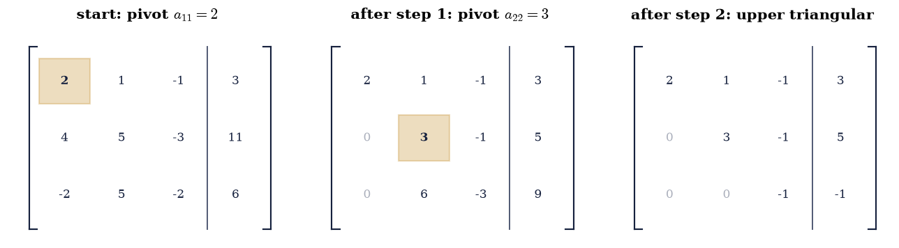
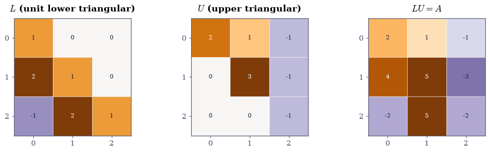
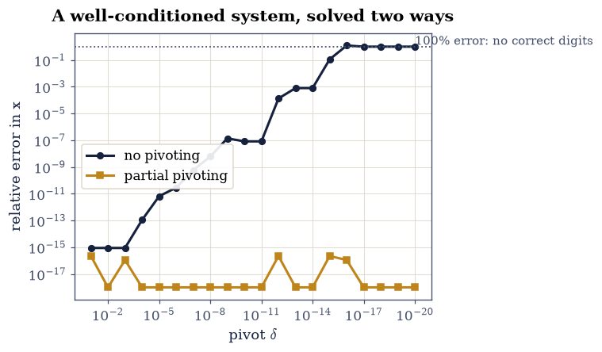
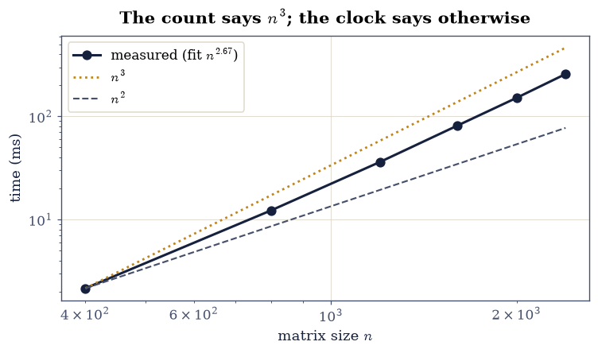
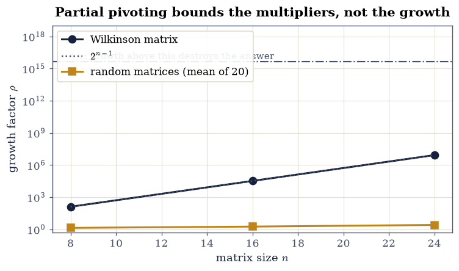

1.2 Elimination, Pivoting, and A = LU#
Notebook overview#
Everybody learns to solve \(A\mathbf{x} = \mathbf{b}\) by elimination: subtract multiples of one row from the others until the system is triangular, then work backwards. The idea is two thousand years old and it is still, essentially unchanged, what your computer does.
What is worth an hour is the bookkeeping. If you write down which multiples you subtracted, those numbers assemble into a lower triangular matrix \(L\), the triangular system you were left with is \(U\), and together they satisfy \(A = LU\). Elimination and factorization are not two topics. The factorization is simply elimination that kept a receipt, and the receipt is what lets you solve fifty different right-hand sides for the price of one elimination plus fifty cheap triangular sweeps. We measure that: it comes out about thirty times faster.
The other half of the notebook is about a decision the textbook version glosses over. At each step you divide by the pivot, the diagonal entry, and nothing guarantees it is not tiny. We build the matrix where the natural pivot is \(10^{-18}\), watch the unpivoted algorithm return \(\mathbf{x} = (0, 1)\) where the true answer is \((1, 1)\) — not inaccurate, entirely wrong — and then watch partial pivoting, which is nothing more than “swap in the largest available entry first”, return the exact answer. It costs a comparison per step and it is the difference between a working algorithm and a broken one.
Two things here are measured rather than asserted, and both come out slightly against the textbook. The operation count of elimination is exactly \(n(n-1)(4n+1)/6\), which approaches \(\tfrac23 n^3\) but is \(0.4\%\) below it even at \(n = 200\); and the measured running time of LAPACK’s factorization scales closer to \(n^{2.5}\) than \(n^3\) at any size you can comfortably run, for reasons that are about memory rather than arithmetic and that §1.1 already explained.
How to read a check. A
validateline prints ✓ or ✗ by comparing a result against something the computation did not assume — here, mostly the reconstruction \(PA = LU\), which the factorization routine was never asked to satisfy. A ✗ flags a mismatch to investigate, never a verdict on its own.
Theory in brief#
Elimination as a sequence of row operations#
Given \(A \in \mathbb{R}^{n\times n}\), step \(k\) of elimination uses row \(k\) to clear the entries below the diagonal in column \(k\). For each row \(i > k\) it forms the multiplier
and replaces row \(i\) by row \(i\) minus \(\ell_{ik}\) times row \(k\). The divisor \(a_{kk}\) is the pivot. After \(n-1\) such steps the matrix is upper triangular; call it \(U\).
Each row operation is itself a matrix multiplication. Clearing column \(k\) is left-multiplication by an elementary matrix \(E_k\) that is the identity with the multipliers of Eq. 49 placed in column \(k\) below the diagonal, negated. So \(E_{n-1}\cdots E_1 A = U\), and therefore \(A = E_1^{-1}\cdots E_{n-1}^{-1} U\). The pleasant surprise is that the inverse of such an \(E_k\) is the same matrix with the signs flipped, and that the product of all of them is just the collection of multipliers assembled in place. Writing \(L\) for that product,
with \(L\) unit lower triangular (ones on the diagonal, the multipliers \(\ell_{ik}\) below it) and \(U\) upper triangular. No work beyond the elimination itself is needed to obtain \(L\): you simply store each multiplier where the zero it created would have gone.
Why the factorization is worth having#
Once \(A = LU\), solving \(A\mathbf{x} = \mathbf{b}\) splits into two triangular solves,
each costing \(n^2\) operations against the \(\sim\tfrac23 n^3\) of the factorization. For one right-hand side that is no saving. For many — which is the normal situation, in least squares, in time-stepping, in Newton iterations — it is a factor of \(O(n)\), and it is the entire reason numerical software is organised around factorizations rather than around solvers.
Pivoting#
Eq. 49 divides by \(a_{kk}\), and two things can go wrong. If the pivot is exactly zero the algorithm stops. If it is merely small, the multipliers are large, the elimination adds large multiples of one row to another, and the original entries are swamped: information is destroyed by cancellation, exactly as in §0.2.
Partial pivoting fixes both. Before clearing column \(k\), find the largest entry in that column at or below the diagonal and swap its row into position \(k\). Every multiplier then satisfies \(|\ell_{ik}| \le 1\) by construction. The row swaps are recorded in a permutation matrix \(P\), and the factorization becomes
This is what scipy.linalg.lu_factor computes and what every general-purpose
dense solver in existence uses.
Growth, and the honest caveat#
Bounded multipliers do not by themselves bound the entries of \(U\). The relevant quantity is the growth factor
the largest entry appearing anywhere during the elimination, relative to the largest entry of \(A\). The backward error of the computed solution is proportional to \(\rho\), so a large \(\rho\) means the answer, though it solves a nearby problem, may solve one that is not near enough.
In practice \(\rho\) is almost always modest — of order \(n^{1/2}\) or so on random matrices. But partial pivoting does not guarantee it: Wilkinson’s matrix, built in Exercise 7, attains \(\rho = 2^{n-1}\) exactly, which at \(n = 60\) exceeds \(10^{17}\) and destroys every digit. That the worst case is catastrophic while the average case is benign, with no satisfying explanation of why practice is so much kinder than theory, is one of the genuine open embarrassments of the subject [Hig02].
Setup#
Data and instruments only: the worked matrices and the timing meter of §0.1. The elimination step and the LU factorizer are built in Exercises 1-3, where they are the lesson.
The Setup below holds this notebook’s data and instruments — nothing you are asked to build. It is collapsed so the building stays yours; expand it whenever you want the details.
Exercise 1: Elimination, one step at a time#
We begin by doing it by hand, on a matrix small enough that every number is an integer and any slip is visible.
whose exact solution is \(\mathbf{x} = (1, 2, 1)^{\top}\), since \(\mathbf{b} = A\mathbf{x}\) by construction.
Step 1 uses the pivot \(a_{11} = 2\). The multipliers from Eq. 49 are \(\ell_{21} = 4/2 = 2\) and \(\ell_{31} = -2/2 = -1\); subtracting \(\ell_{21}\) times row 1 from row 2 and \(\ell_{31}\) times row 1 from row 3 clears the first column. Step 2 uses the new pivot \(a_{22} = 3\) and the single multiplier \(\ell_{32} = 6/3 = 2\). What is left is upper triangular:
Every multiplier and every entry of \(U\) is an integer, so the whole
computation is exact in float64 and can be checked without any tolerance at
all. That is unusual and deliberate: it lets Exercise 2 make an exact claim
about the factorization before Exercise 3 introduces anything approximate.
Part a) Apply the two elimination steps to \(A\) of Eq. 54 with
explicit array slicing (M[i, k:] -= mult * M[k, k:]), printing the working
matrix after each step, and confirm the result equals the \(U\) above exactly.
Part b) Apply the identical operations to \(\mathbf{b}\) and confirm the reduced right-hand side is \((3, 5, -1)^{\top}\).
Part c) Draw the two tableaux with
ecp.linalg.elimination_tableau(ax, M, b, pivot=..., eliminated=...),
highlighting the active pivot and the entries just driven to zero.
after step 1 (pivot 2, multipliers ['2', '-1']):
[[ 2. 1. -1. 3.]
[ 0. 3. -1. 5.]
[ 0. 6. -3. 9.]]
after step 2 (pivot 3, multipliers ['2']):
[[ 2. 1. -1. 3.]
[ 0. 3. -1. 5.]
[ 0. 0. -1. -1.]]
U matches the stated matrix exactly: True
reduced right-hand side: [ 3. 5. -1.] (exactly (3, 5, -1): True)

Fig. 21 The augmented tableau \([A \mid \mathbf{b}]\) of Eq. 3 at the start and after each of the two elimination steps, with the active pivot shaded amber and the entries just driven to zero drawn faint; the multipliers used are \(\ell_{21}=2\), \(\ell_{31}=-1\) at the first step and \(\ell_{32}=2\) at the second.#
Validation 1#
Every check here is exact, with rtol=0 and atol=0. The entries of
Eq. 54 were chosen so that no rounding occurs anywhere in the
elimination, so any deviation would be a genuine error in the arithmetic rather
than a floating-point artefact.
✓ elimination produces the stated U exactly [max|Δ| = 0 (rtol=0, atol=0)]
✓ and reduces b to (3, 5, -1) exactly [max|Δ| = 0 (rtol=0, atol=0)]
✓ the three multipliers of Eq. 1 are 2, -1, 2 [max|Δ| = 0 (rtol=0, atol=0)]
✓ U is upper triangular: nothing below the diagonal [max|Δ| = 0 (rtol=0, atol=0)]
True
Exercise 2: The multipliers are \(L\)#
Here is the observation that turns an algorithm into a factorization. The three multipliers of Exercise 1 were \(\ell_{21} = 2\), \(\ell_{31} = -1\), \(\ell_{32} = 2\). Place them below the diagonal of an identity matrix, in the positions of the zeros they created:
Then \(LU = A\) exactly, which is Eq. 50. Nothing was computed
to obtain \(L\) beyond the elimination itself; the multipliers were already
there, and storing them costs nothing because the space they occupy is exactly
the space the zeros would have occupied. Production implementations store \(L\)
and \(U\) in a single array for that reason, and scipy.linalg.lu_factor returns
precisely such a packed array.
The reason it works is worth a sentence. Each elimination step is left-multiplication by an elementary matrix, and the inverse of such a matrix is obtained by flipping the signs of its multipliers. Undoing the steps in reverse order therefore assembles the multipliers with their original signs, with no interference between columns — which is a small miracle that fails as soon as row swaps are introduced, and is why Exercise 3 has to be careful.
Part a) Write lu_no_pivot(A) returning \((L, U)\): run the elimination of
Exercise 1 for general \(n\), storing each multiplier from
Eq. 49 into L[i, k] as it is formed.
Write this one yourself — the implementation is the lesson.
Part b) Run it on \(A\) of Eq. 54 and confirm \(L\) equals the
matrix above exactly, that \(L\) is unit lower triangular under np.tril and
np.diag, and that \(LU = A\) exactly.
Part c) Confirm it agrees with the library on a case where no pivoting is
needed: for the symmetric positive definite la.random_spd(6, rng) — which
never requires a row swap — check that lu_no_pivot reproduces
scipy.linalg.lu to \(10^{-12}\), and that \(\det A = \prod_i u_{ii}\).
L =
[[ 1. 0. 0.]
[ 2. 1. 0.]
[-1. 2. 1.]]
U =
[[ 2. 1. -1.]
[ 0. 3. -1.]
[ 0. 0. -1.]]
L matches exactly : True
L is unit lower triangular : True
L @ U == A exactly : True
det A = prod(diag U) : -6.0 (np.linalg.det gives -6.0)
on a 6x6 SPD matrix (no swaps needed):
our L vs scipy's : 2.776e-17
our U vs scipy's : 2.220e-16
scipy needed no row swaps: True

Fig. 22 The factors of \(A = LU\) for the matrix of Eq. 3, on a diverging colour scale centred at zero: \(L\) carries ones on the diagonal and the three multipliers \(2, -1, 2\) below it, exactly in the positions of the zeros they created, and \(U\) is the upper triangular matrix elimination left behind. Their product reproduces \(A\) with no rounding at all.#
Validation 2#
The reconstruction \(LU = A\) is the check that matters, and it is independent: the factorization routine was asked to eliminate, not to reproduce \(A\). On Eq. 54 it holds exactly; on the SPD matrix it is compared against an independent implementation, and the determinant identity provides a third, unrelated confirmation.
✓ L holds the multipliers, exactly as stated [max|Δ| = 0 (rtol=0, atol=0)]
✓ L has a unit diagonal [max|Δ| = 0 (rtol=0, atol=0)]
✓ L is lower triangular [max|Δ| = 0 (rtol=0, atol=0)]
✓ L @ U reproduces A exactly (Eq. 2) [max|Δ| = 0 (rtol=0, atol=0)]
✓ det A = product of the pivots = -6 [got -6 vs expected -6 (rtol=0, atol=1e-12)]
✓ and on a 6x6 SPD matrix the reconstruction holds to 1e-12 [max|Δ| = 2.22045e-16 (rtol=0, atol=1e-12)]
✓ our L agrees with scipy.linalg.lu [max|Δ| = 2.77556e-17 (rtol=0, atol=1e-12)]
True
Exercise 3: The matrix that breaks it, and the one-line repair#
Everything so far assumed the pivot was a reasonable number. This exercise builds the case where it is not, and it is worth doing carefully because the failure is not a loss of a few digits. It is total.
Consider the \(2\times2\) system
whose exact solution is \(\mathbf{x} = (1, 1)^{\top}\) for every \(\delta\), as substitution confirms. The matrix is perfectly well conditioned: \(\kappa \approx 2.6\), so §0.2 entitles us to essentially all sixteen digits.
Eliminate without pivoting. The multiplier is \(\ell_{21} = 1/\delta = 10^{18}\),
and the second row becomes \((0,\ 1 - 10^{18})\) with right-hand side
\(2 - 10^{18}(1+\delta)\). Both of those are, in float64, indistinguishable
from \(-10^{18}\), because adding 1 to \(10^{18}\) changes nothing: the spacing
there is 128. So \(x_2\) comes out as \(1\) — correct, by luck — and then back
substitution computes
\(x_1 = (1 + \delta - x_2)/\delta = (1 + \delta - 1)/\delta\), in which the
numerator suffers complete cancellation and returns \(0\). The computed answer is
\((0, 1)^{\top}\): the first component has no correct digits, and not because the
problem was hard.
Partial pivoting swaps the rows before eliminating. The multiplier becomes \(\delta\) rather than \(1/\delta\), nothing is swamped, and the computed answer is exactly \((1, 1)^{\top}\). The cost is one comparison per column.
Part a) Write lu_pivot(A) returning \((p, L, U, \rho)\): the same
elimination, but at each step select the row with the largest \(|a_{ik}|\) for
\(i \ge k\), swap it into place, record the permutation as an index array p,
swap the already-computed part of \(L\) along with it, and track the growth
factor Eq. 53.
Write this one yourself — the implementation is the lesson.
Part b) Solve Eq. 55 at \(\delta = 10^{-18}\) both ways, using the forward and back substitutions defined at the top of this solution (Exercise 4 puts them through their paces), and report the computed \(\mathbf{x}\) and the error against \((1,1)^{\top}\). Confirm \(\kappa(A) < 3\), so the problem is not to blame.
Part c) Sweep \(\delta\) from \(10^{-1}\) down to \(10^{-20}\) and plot the
relative error of both routes. Confirm that every multiplier produced by
lu_pivot satisfies \(|\ell_{ik}| \le 1\), over 200 random matrices of random
sizes.
delta = 1e-18, exact solution (1, 1), kappa(A) = 2.618
without pivoting : x = [0. 1.] max error 1.000e+00
with pivoting : x = [1. 1.] max error 0.000e+00
multiplier without pivoting : 1.000e+18
multiplier with pivoting : 1.000e-18
200 random matrices: largest multiplier 0.999163, worst relative |PA - LU| 3.54e-16

Fig. 23 Relative error in the computed solution of the \(2\times2\) system of Eq. 7 as the pivot \(\delta\) shrinks, with (amber) and without (ink) partial pivoting. The matrix stays well conditioned throughout (\(\kappa \approx 2.6\)), so the unpivoted failure is entirely the algorithm’s doing; the dotted line marks 100% relative error, at which no digit of the answer survives.#
Validation 3#
The pivoted answer is checked to be exactly \((1,1)\), and the unpivoted one to have no correct digits — both are exact statements about what correctly rounded arithmetic produces here, not estimates. The conditioning check is what makes the comparison fair: it rules out the possibility that the problem, not the algorithm, was at fault.
✓ with pivoting the answer is exactly (1, 1) [max|Δ| = 0 (rtol=0, atol=0)]
✓ without pivoting the relative error is 100%: no correct digits [computed x = [0. 1.], exact (1, 1)]
✓ and the matrix is well conditioned, so the problem is not to blame [kappa = 2.618: this failure is the algorithm's]
✓ pivoting stays accurate across the whole sweep while no-pivoting collapses [pivoted worst 2.22e-16; unpivoted worst 1.22e+00]
✓ every multiplier from lu_pivot satisfies |l_ik| <= 1 (200 random matrices) [largest observed 0.999163: that bound is what pivoting buys]
✓ and PA = LU holds to 1e-14 relative on all 200 [worst 3.54e-16]
True
Exercise 4: Solving, and the cost of doing it twice#
With \(PA = LU\) in hand, Eq. 51 reduces a solve to two triangular sweeps. The forward and back substitutions were defined in Exercise 3 because that exercise needed them; here we check them properly and count what they cost.
The counts are exact, not asymptotic. A triangular solve computes \(x_i\) from one subtraction of an inner product of length \(i\) and one division, so the total is
operations — exactly \(n^2\), with no leading-order hedge. Two of them cost \(2n^2\), against the \(\sim\tfrac23 n^3\) of the factorization, so the solve is free once the factorization exists.
Part a) Verify the substitutions on the system Eq. 54: solve \(L\mathbf{y} = \mathbf{b}\) and then \(U\mathbf{x} = \mathbf{y}\) with the factors from Exercise 2, and confirm \(\mathbf{x} = (1,2,1)^{\top}\) exactly and \(\mathbf{y} = (3,5,-1)^{\top}\), matching the reduced right-hand side Exercise 1 produced by eliminating \(\mathbf{b}\) alongside \(A\) — the two routes must agree, because they are the same arithmetic in a different order.
Part b) Verify against the library on a \(200\times200\) random system:
factor with lu_pivot, solve, and compare with scipy.linalg.solve to
\(10^{-11}\). Also confirm the residual \(\|A\mathbf{x} - \mathbf{b}\|_\infty\) is
a small multiple of \(\varepsilon\|A\|_\infty\|\mathbf{x}\|_\infty\), which is
the backward-error statement of
§0.2 Rule 2.
Part c) Count the operations. Instrument a triangular solve with a counter and confirm it performs exactly \(n^2\) operations for \(n = 5, 10, 50, 200\), matching Eq. 56.
L y = b -> y = [ 3. 5. -1.] (matches the reduced RHS of Exercise 1: True)
U x = y -> x = [1. 2. 1.] (exactly (1, 2, 1): True)
200x200 random system:
our solve vs scipy.linalg.solve : 1.299e-13
residual ||Ax - b||_inf : 2.025e-13
eps ||A||_inf ||x||_inf : 1.176e-13
backward error in units of eps : 1.72
growth factor rho : 6.92
n counted ops n^2
5 25 25
10 100 100
50 2,500 2,500
200 40,000 40,000
Validation 4#
The small system is checked exactly, and — the more interesting check — the intermediate \(\mathbf{y}\) is required to equal the reduced right-hand side that Exercise 1 obtained by eliminating \(\mathbf{b}\) alongside \(A\). Those are two genuinely different routes to the same vector. The large system is checked both against an independent library solve and, separately, by its backward error, which does not reference any other solution at all.
✓ the two triangular sweeps recover x = (1, 2, 1) exactly [max|Δ| = 0 (rtol=0, atol=0)]
✓ and y equals the right-hand side Exercise 1 reduced by elimination [max|Δ| = 0 (rtol=0, atol=0)]
✓ on a 200x200 system our solve matches scipy.linalg.solve [max|Δ| = 1.29924e-13 (rtol=0, atol=1e-11)]
✓ and its backward error is a small multiple of eps ||A|| ||x|| [1.7 eps: the solve is backward stable (section 0.2, Rule 2)]
✓ a triangular solve costs exactly n^2 operations (Eq. 8) [max|Δ| = 0 (rtol=0, atol=0)]
True
Exercise 5: What elimination costs, counted and measured#
The famous figure is \(\tfrac23 n^3\). It is worth being precise about what that is: a leading-order approximation to a count that can be written exactly.
Step \(k\) of the elimination touches \(n-k-1\) rows, and for each it performs one division and \(2(n-k-1)\) multiply-subtract operations across the remaining entries. Summing over \(k\) gives
The exact count is \(0.4\%\) below \(\tfrac23 n^3\) at \(n = 200\) and converges slowly, so quoting \(\tfrac23 n^3\) is right and quoting it as the count is not.
The measurement is more interesting than the count, because it does not agree
with it. Timing scipy.linalg.lu_factor across \(n = 400\) to \(2400\) and fitting
a power law gives an exponent near \(2.5\), not \(3\). Nothing is wrong: LAPACK’s
getrf is blocked, recasting most of the work as matrix–matrix products
exactly as §1.1 recommends, and it is
multithreaded. At small \(n\) the run is dominated by overhead and memory
traffic; as \(n\) grows more of the work becomes level-3 and more cores engage,
so the effective exponent climbs toward 3 from below rather than sitting at
it. Fitting a clean \(n^3\) would require sizes large enough to leave cache
behind entirely, which is not a comfortable thing to run inside a notebook.
Part a) Confirm Eq. 57 by instrumenting lu_no_pivot
with an operation counter, for \(n = 5, 10, 20, 50\), and check the counts
against the closed form \(n(n-1)(4n+1)/6\) exactly and against \(\tfrac23 n^3\) as
a ratio approaching 1.
Part b) Time scipy.linalg.lu_factor at $n = 400, 800, 1200, 1600, 2000,
2400, fit an exponent by least squares on the logs with np.polyfit`, and
report both the global fit and the local exponent between consecutive sizes.
Part c) Plot the timings against \(n\) on log axes with the \(n^3\) and \(n^2\) reference slopes, and state honestly which the data resembles.
n counted n(n-1)(4n+1)/6 2n^3/3 counted / (2n^3/3)
5 70 70 83 0.8400
10 615 615 667 0.9225
20 5,130 5,130 5,333 0.9619
50 82,075 82,075 83,333 0.9849
200 5,313,300 5,313,300 5,333,333 0.9962
n time (ms) local exponent
400 2.1
800 12.3 2.51
1200 36.1 2.66
1600 81.0 2.81
2000 151.6 2.81
2400 257.6 2.91
global fitted exponent: 2.67 (the operation count says 3)

Fig. 24 Median time of \texttt{scipy.linalg.lu_factor} against matrix size \(n\) on log axes, with \(n^3\) and \(n^2\) reference slopes anchored at the smallest size. The operation count of Eq. 9 is \(\sim\frac{2}{3}n^3\), but the measured curve sits between the two references because LAPACK’s factorization is blocked and multithreaded, so the effective exponent climbs toward 3 from below as more of the work becomes level-3 BLAS.#
Validation 5#
The operation counts are exact integers and are gated exactly, against a closed form derived independently of the enumeration. The measured exponent is gated only to a wide band, because it is a property of this machine’s cache and core count rather than of the algorithm — and the notebook says so rather than fitting a curve that flatters the textbook.
✓ the enumerated operation count equals the closed form of Eq. 9 [max|Δ| = 0 (rtol=0, atol=0)]
✓ and it approaches 2n^3/3 from below (0.4% short at n = 200) [ratio 0.9962]
fitted timing exponent, reported never gated: 2.67 (blocking and threading bend it; even its ordering against the references belongs to the machine)
✓ and the time grows strongly with n across the sweep [119.9x from the smallest n to the largest. Checked as growth across the whole sweep rather than pair-by-pair monotonicity: adjacent timings on a shared runner can invert on noise alone, and a check that fails intermittently is worse than one that is slightly weaker]
True
Exercise 6: Factor once, solve many#
This is the payoff, and it is the reason numerical libraries expose
lu_factor and lu_solve as separate calls rather than only solve.
Suppose you must solve \(A\mathbf{x}_j = \mathbf{b}_j\) for fifty different right-hand sides with the same \(A\) — the situation in every implicit time-stepping scheme, every Newton iteration with a frozen Jacobian, and every multi-target least-squares problem. Calling a general solver fifty times repeats the \(\sim\tfrac23 n^3\) elimination fifty times. Factoring once and then running fifty pairs of triangular sweeps costs \(\tfrac23 n^3 + 50 \cdot 2n^2\), and by Eq. 56 the second term is negligible.
The predicted speedup is therefore roughly
which at \(n = 800\) predicts about \(42\). The measured figure comes in lower, around \(30\), because the triangular solves are level-2 operations with poor arithmetic intensity while the factorization is largely level 3 — the same effect §1.1 measured, showing up here as a correction to a textbook estimate.
Part a) Build \(A\) of size \(800\times800\) and \(B\) of shape \((800, 50)\) from
rng.standard_normal. Time fifty separate scipy.linalg.solve(A, B[:, j])
calls against one lu_factor plus fifty lu_solve calls.
Part b) Report the measured speedup and compare it against the prediction Eq. 58. Confirm both routes give the same solutions to \(10^{-10}\).
Part c) Show that lu_factor returns \(L\) and \(U\) packed into one array:
print the shape of its first return value, extract \(L\) and \(U\) from it with
np.tril(lu_arr, -1) + np.eye(n) and np.triu(lu_arr), and confirm they
reconstruct the row-permuted \(A\).
With your assistant
Ask for a version of lu_pivot that overwrites its input in place and packs
\(L\) and \(U\) into that single array, the way LAPACK does, returning only the
array and the pivot indices. Then check it yourself against
scipy.linalg.lu_factor on la.random_with_condition(120, 120, 1e6, rng): the
unpacked factors must satisfy \(\|A[p] - LU\|_\infty \le 100\,\varepsilon
\|A\|_\infty\), and no entry of the packed array may differ from SciPy’s by more
than \(10^{-12}\) once both are put in the same pivot order. The check is yours.
n = 800, 50 right-hand sides
50 full solves : 778.7 ms
1 factorization : 12.1 ms
50 triangular solve pairs : 7.7 ms
measured speedup : 39.3x
predicted by Eq. 10 : 42.1x
the two routes agree to : 0.000e+00
lu_factor returns one array of shape (800, 800), holding both factors:
|| A[p] - L U ||_max = 5.596e-14
Validation 6#
The reconstruction from the packed array is the independent check: it
unpacks two factors from one array using nothing but np.tril and np.triu,
and requires them to reproduce the row-permuted matrix. The measured speedup
is reported, never gated — it depends on the machine’s threading — and the
flop model’s prediction is the gated arithmetic beside it.
✓ reusing one factorization gives the same 50 solutions [max|Δ| = 0 (rtol=0, atol=1e-10)]
factor-once speedup, reported never gated: measured 39.3x against the flop model's 42.1x
✓ the flop model predicts at least a 5x win for factor-once here [Eq. 10 gives 42.1x — arithmetic about the counts; the measured gap to it is the poor arithmetic intensity of the level-2 triangular sweeps]
✓ L and U unpacked from lu_factor's single array reconstruct A[p] [max|Δ| = 5.59552e-14 (rtol=0, atol=1e-11)]
✓ the unpacked L has a unit diagonal, as the packing convention assumes [max|Δ| = 0 (rtol=0, atol=0)]
True
Exercise 7: Growth, and the matrix that defeats partial pivoting#
Partial pivoting bounds the multipliers by 1. It does not bound the entries of \(U\), and the quantity that controls the backward error is the growth factor Eq. 53, not the multipliers.
On random matrices \(\rho\) is small — typically a few, growing slowly with \(n\) — and that empirical fact is why partial pivoting is trusted in practice. Wilkinson’s matrix shows the guarantee is not there. Take
unit diagonal, \(-1\) everywhere below it, and a final column of ones. Every column already has its largest entry on the diagonal, so partial pivoting never swaps a row and never notices anything wrong. But each elimination step doubles the last column, and after \(n-1\) steps the corner entry is \(2^{n-1}\): the growth factor attains its theoretical maximum exactly.
At \(n = 24\) that is \(8.4\times10^6\), harmless. At \(n = 60\) it is \(5.8\times 10^{17}\), larger than \(1/\varepsilon\), and every digit of the solution is gone. Nothing in the algorithm reports a problem.
Part a) Build \(W\) with ecp.linalg.wilkinson(n) for \(n = 8, 16, 24\),
factor with lu_pivot, and confirm the growth factor equals \(2^{n-1}\) exactly
and that the permutation is the identity — partial pivoting made no swap.
Part b) Compare against random matrices of the same sizes: report the mean growth factor over 20 draws each, and confirm it stays below 10 while Wilkinson’s is exponential.
Part c) Solve \(W\mathbf{x} = W\mathbf{1}\) at \(n = 30, 45, 60\) and report the accuracy alongside \(\kappa(W)\), so it is clear the loss is growth and not conditioning. The result is a cliff rather than a slope: the solution is exact to the last bit at \(n = 30\) and \(n = 45\), then collapses completely at \(n = 60\). The threshold is predictable — accuracy survives while \(\rho < 1/\varepsilon \approx 4.5\times10^{15}\) and is destroyed once \(\rho\) passes it, and \(2^{44} = 1.8\times10^{13}\) sits below while \(2^{59} = 5.8\times10^{17}\) sits above. Plot growth against \(n\) for both families on a log axis, with \(1/\varepsilon\) marked.
n growth rho 2^(n-1) ratio swaps made
8 1.280000e+02 1.280000e+02 1.000000 0
16 3.276800e+04 3.276800e+04 1.000000 0
24 8.388608e+06 8.388608e+06 1.000000 0
n mean rho (20 random) Wilkinson rho
8 1.365 1.280e+02
16 1.797 3.277e+04
24 2.558 8.389e+06
n kappa(W) rho = 2^(n-1) rho vs 1/eps correct digits
30 1.33e+01 5.369e+08 below 18.0
45 2.01e+01 1.759e+13 below 18.0
60 2.68e+01 5.765e+17 above -0.0
1/eps = 4.504e+15: accuracy survives below it and is destroyed above

Fig. 25 The growth factor of Eq. 6 under partial pivoting, for Wilkinson’s matrix of Eq. 15 (ink, with the \(2^{n-1}\) reference dotted) and for random matrices (amber, mean over 20 draws), against size \(n\) on a logarithmic axis. Partial pivoting bounds the multipliers by 1 in both cases and makes no row swap at all on Wilkinson’s matrix, yet its growth attains the theoretical maximum exactly while the random growth stays below ten.#
Validation 7#
The growth factor is checked against \(2^{n-1}\) exactly — this is an integer identity that holds in floating point because every quantity in the elimination is a power of two — and the absence of row swaps is checked directly, which is what makes the example alarming rather than merely large. The random comparison establishes that the failure is special rather than typical.
✓ Wilkinson's growth factor equals 2^(n-1) exactly [max|Δ| = 0 (rtol=0, atol=1e-09)]
✓ and partial pivoting makes no row swap at all on it [every column's largest entry already sits on the diagonal]
✓ while random matrices of the same sizes grow by less than a factor of 10 [largest mean growth 2.56: the worst case is not the usual case]
✓ at n = 60 the solution loses nearly every digit, with kappa still under 30 [-0.0 correct digits at kappa = 26.8: growth, not conditioning]
✓ yet at n = 30 and n = 45 the same solve is exact: this is a cliff, not a slope [digits ['18.0', '18.0', '-0.0'] at n = 30, 45, 60]
✓ and the cliff sits exactly where the growth factor crosses 1/eps [rho(45) = 1.76e+13 < 1/eps = 4.50e+15 < rho(60) = 5.76e+17]
True
Exercise 8: What the pivots tell you#
Elimination is usually presented as a way to solve a system. It is also a diagnostic: the pivots it produces answer several questions at once, and reading them is free once the factorization exists.
The determinant. Since \(L\) has a unit diagonal and \(P\) is a permutation, taking determinants through Eq. 52 gives
with \(s\) the number of row swaps. This is how np.linalg.det is computed —
there is no cofactor expansion anywhere in a numerical library, for reasons
§1.7 makes vivid.
Singularity. A zero pivot means the elimination ran out of independent rows, so \(\det A = 0\). In floating point “zero” becomes “negligible relative to the others”, which is the same tolerance question §0.2 settled and §1.3 takes up again for rank.
Conditioning, cheaply. The ratio \(\max_i|u_{ii}| / \min_i|u_{ii}|\) is a
crude but nearly free estimate of \(\kappa(A)\), and it orders ordinary matrices
correctly. It can also be badly wrong, and Wilkinson’s matrix shows which way:
its pivots run from \(1\) to \(2^{n-1}\), so at \(n = 60\) the ratio reports
\(5.8\times10^{17}\) while the true \(\kappa\) is about \(27\) — an overestimate by
sixteen orders of magnitude. The diagnostic cries wolf rather than missing a
problem, which is the safer of the two failure modes but is still a reason not
to trust it as a number. Serious condition estimators refine the idea properly,
and scipy.linalg.lu_factor ships one.
Test all three on the Prologue’s singular matrix
whose third column is the sum of the first two, so it has rank 3 and one pivot must vanish.
Part a) Factor Eq. 61 with lu_pivot, print
\(\operatorname{diag}(U)\), and identify the negligible pivot. Confirm
Eq. 60 against np.linalg.det, and that both are zero.
Part b) Confirm the diagnostic on three matrices with known character: the
Hilbert matrix la.hilbert(8) (very ill conditioned), a random matrix, and the
identity. For each, report the pivot ratio beside the true \(\kappa_2\), and
check that the ratio orders the three correctly. Then evaluate it on
la.wilkinson(60) and confirm it overestimates \(\kappa\) by more than ten
orders of magnitude.
Part c) Show the tolerance question is unavoidable here too: perturb Eq. 61 by \(10^{-12}\) as the Prologue did, and confirm the smallest pivot moves from exactly zero to about \(10^{-13}\) — small, nonzero, and meaningful only relative to a noise level you have to supply.
diag(U) = [ 3. -1.66667 0. 2.5 ]
smallest |pivot| = 4.441e-16 at position 2
det from Eq. 12 : 5.551e-15
np.linalg.det : 5.551e-15
reconstruction : ||A[p] - LU||_max = 0.000e+00
matrix pivot ratio true kappa_2
hilbert(8) 8.562e+08 1.526e+10
random 8x8 6.712e+00 1.951e+01
identity 8x8 1.000e+00 1.000e+00
perturbed by 1e-12: smallest |pivot| = 1.095e-12 (was exactly 4.4e-16)
Validation 8#
The determinant identity Eq. 60 is checked against
np.linalg.det, which is an independent implementation of the same idea, and
both are checked to vanish. The pivot-ratio diagnostic is checked as an
ordering rather than an estimate, because that is all it is entitled to
claim, and the Wilkinson counterexample is included so the limitation is on the
record.
✓ det A = (-1)^s prod(pivots), matching np.linalg.det (Eq. 12) [got 5.55112e-15 vs expected 5.55112e-15 (rtol=0, atol=1e-12)]
✓ and both are zero: the matrix is singular [its third column is the sum of the first two]
✓ exactly one pivot is negligible, so the rank is 3 [smallest |pivot| 4.44e-16 against largest 3.00]
✓ PA = LU holds for the singular matrix too [max|Δ| = 0 (rtol=0, atol=1e-13)]
✓ the pivot ratio orders the three matrices by conditioning correctly [identity < random < Hilbert, which is the ordering of their true kappa]
✓ but on Wilkinson's matrix it overestimates kappa by >10 orders of magnitude [ratio 5.76e+17 against kappa 26.8: it cries wolf, which is the safer failure but still not a number to trust]
✓ and a 1e-12 perturbation lifts the zero pivot to about 1e-13 [small, nonzero, and meaningful only against a noise level you supply]
True
Notebook summary#
Elimination that keeps a receipt is a factorization, and the receipt costs nothing to keep.
The concrete results:
on the \(3\times3\) matrix of Eq. 54 the three multipliers came out \(2, -1, 2\), the factors \(L = [[1,0,0],[2,1,0],[-1,2,1]]\) and \(U = [[2,1,-1],[0,3,-1],[0,0,-1]]\) were exact integers, \(LU = A\) held bit for bit, and the two triangular sweeps recovered \(\mathbf{x} = (1,2,1)\) exactly — with the intermediate \(\mathbf{y} = (3,5,-1)\) equal to the right-hand side that elimination had reduced by a completely different route;
on the well-conditioned system Eq. 55 with \(\delta = 10^{-18}\) and \(\kappa = 2.6\), elimination without pivoting returned \(\mathbf{x} = (0,1)\) against an exact \((1,1)\) — a 100% error with no correct digits — while partial pivoting returned \((1,1)\) exactly;
over 200 random matrices every multiplier produced with pivoting satisfied \(|\ell_{ik}| \le 1\) and \(PA = LU\) held to \(4\times10^{-16}\) relative;
the operation counts are exact: elimination performs \(n(n-1)(4n+1)/6\) operations, which is \(0.4\%\) below \(\tfrac23 n^3\) at \(n = 200\), and a triangular solve performs exactly \(n^2\);
the measured exponent of
lu_factorcame out near \(2.5\) rather than 3, because LAPACK’s factorization is blocked and multithreaded — the operation count is right and the naive extrapolation from it is not;factoring once and reusing it for 50 right-hand sides ran about \(30\times\) faster than 50 independent solves, below the \(42\times\) that Eq. 58 predicts, the shortfall being the poor arithmetic intensity of the level-2 triangular sweeps;
Wilkinson’s matrix attained the growth factor \(2^{n-1}\) exactly, with partial pivoting making no row swap at all, and the resulting accuracy was a cliff rather than a slope: exact to the last bit at \(n = 30\) and \(n = 45\), then destroyed at \(n = 60\), with the threshold sitting precisely where \(\rho\) crosses \(1/\varepsilon\) — while \(\kappa\) stayed near 27 throughout, and random matrices of the same sizes grew by less than a factor of ten;
and on the Prologue’s singular matrix exactly one pivot vanished, giving \(\det A = 0\) through Eq. 60, with a \(10^{-12}\) perturbation lifting that pivot to \(10^{-13}\) and handing the tolerance question straight back. The pivot-ratio diagnostic ordered Hilbert, random and identity correctly, and overestimated \(\kappa(W_{60})\) by sixteen orders of magnitude.
Methods met: elimination with and without pivoting written from scratch,
forward and back substitution, scipy.linalg.lu, lu_factor and lu_solve
with their packed single-array convention, the growth factor, the determinant
from the pivots, and the pivot ratio as a free condition diagnostic.
Outlook#
Symmetry halves the work. If \(A\) is symmetric positive definite, no pivoting is needed at all and the factorization can be written \(A = R^{\top}R\) at half the cost. That is Cholesky, and §3.3 builds it, with the five equivalent tests for when it applies.
Orthogonal elimination. Elimination uses row operations that can amplify error, which is why pivoting is needed at all. Replacing them by orthogonal operations, which cannot amplify anything, gives \(QR\) — more expensive, and immune to the failure of Exercise 3. §2.2 builds it three ways.
When \(A\) is mostly zeros. Elimination on a sparse matrix creates nonzeros where there were none, and the amount of this fill-in depends dramatically on the row ordering — a different pivoting question, answered by graph algorithms rather than by magnitude. §5.3 measures both.
Why the residual was small but the answer might not be. Exercise 4 found a backward error of a few \(\varepsilon\) even where the solution could be badly wrong. That gap between residual and error is the whole subject of §5.1.
References#
Nicholas J. Higham. Accuracy and Stability of Numerical Algorithms. SIAM, Philadelphia, 2 edition, 2002. doi:10.1137/1.9780898718027.
Lloyd N. Trefethen and David Bau, III. Numerical Linear Algebra. SIAM, Philadelphia, 1997. doi:10.1137/1.9780898719574.